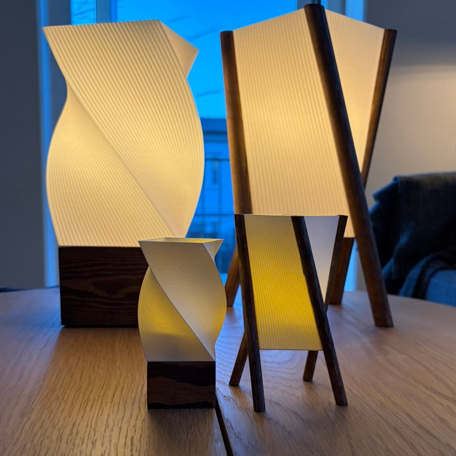
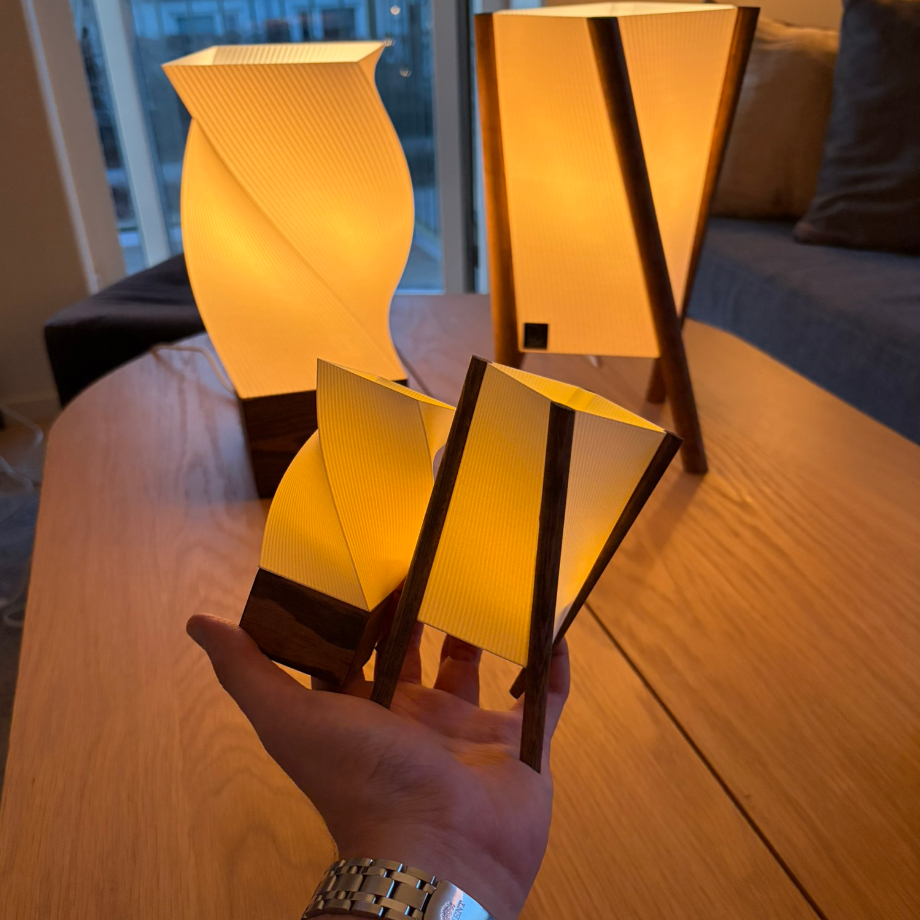
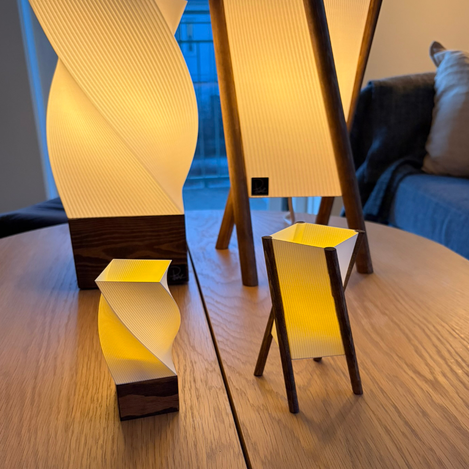
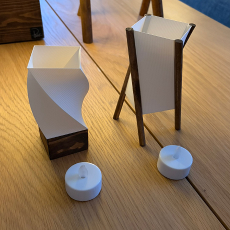

Ville egenligen bara testa lite material
Tyckte det såg gulligt ut så gjorde de till en lampa
Sött va?




Egentligen gjorde jag samma steg för de stora versionerna av lamporna men bara mindre
Skalade ner de så att det typ precis fick plats ett led-värmeljus och ändå gick att använda normala storlekar på trä
Skulle egenligen varit 34mm högt trä på den snurrande lampan men hade 21x33mm list hemma så körde på de
Satte 8mm rundstav istället för 21mm på lutande lampa med det gjorde tyvärr att de inte är i exakt samma skala
Snurrande lampa är 35% av orginalet men lutande lampa är 38.5%